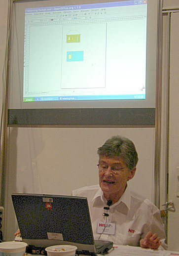
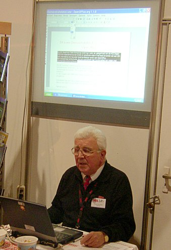
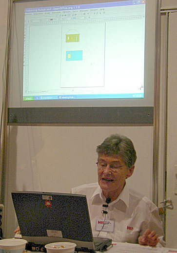
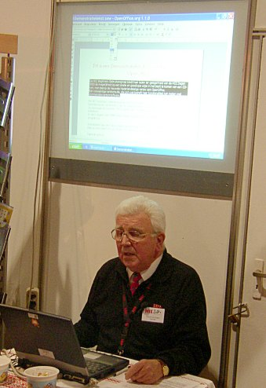

Tineke Angenent en Henk Gils vóór de stand van de Beginners GG.

Like Lyons demonstreert OOo Draw.

Egbert van Engen demonstreert OOo Writer.
OpenOffice.org werd op de HCC-dagen goed vertegenwoordigd op de stand van de Beginners gebruikersgroep van de HCC. Tineke Angenent en Henk Gils van deze gebruikersgroep maken zich sterk voor de promotie van OpenOffice.org, en dit was dan ook het thema van de stand.
Overal hingen OpenOffice.org 1.1 banners, er werden demonstraties gegeven, en de voor deze gelegenheid samengestelde OpenOffice.org CD-ROM kon er worden aangeschaft. Het lukte de vrijwilligers uitstekend hun grote enthousiasme voor het pakket op de bezoekers over te brengen!
Hier zijn enkele foto's:

Like Lyons demonstreert OOo Draw.

Egbert van Engen demonstreert OOo Writer.